Section 2: Simple Paramter Estimation
We start from the blank CXTFIT/Excel file CXTFIT.xls- Open CXTFIT.xls and save it as Ex1.xls. If Macro security is not set to low, enable Macros
- Input experiment conditions, parameters, and observations with locations and times
- Input formula for model prediction corresponding to observation
- Set up the objective function
- Solve the parameter estimation problem
- Add more statistics
- Options and alternative operations for step 5
- Simplify formula input using Excel names
Fill in B2:B4 for fixed parameters, B6 for calibrating parameters with C6:D6 for lower and upper bound for constraint, and A11:B46 for observation times and concentrations (Fig 2.1).
Note that organization of the inputs is flexible as long as the calibrating parameters are in a range continuous in a column, and the lower and upper bound (constraint) are next to the parameter range.
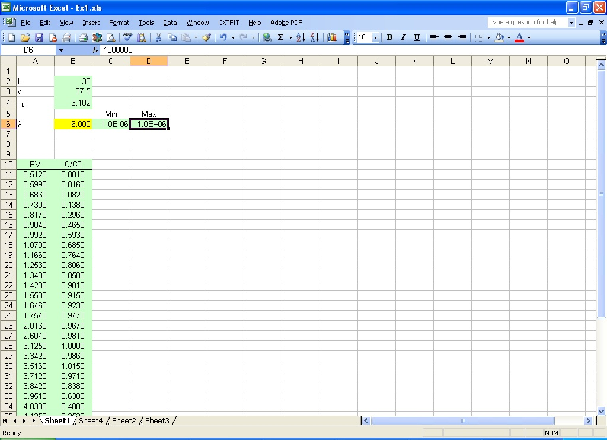
Fig. 2.1 Input parameters and observations in Excel sheet
Use either CDE or MIM function to calculate predictions corresponding to the observations using the location, time, and other fixed and/or estimated parameters.
Type in the formula =CDE(1.0, A11, B$4, 1.0, B$6/B$2) in C11 (Fig 2.2);
Double click on the right bottom corner of cell C11 to extend the formula to the rest of the rows.
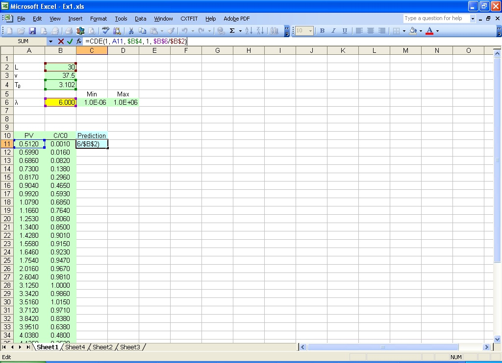
Fig. 2.2 Input formula for model prediction
The arguments in this formula are: 1.0 for relative distance from the inlet, A11 for dimensionless time, B$4 for pulse, 1.0 for unit velocity in dimensionless form, and B$6/B$2 for the inverse of Peclet number (See Eq. 1 in the text for more information). Default setting is used for optional arguments for this example.
The observations can be plotted against the predictions (Fig. 2.3). When any of the parameters are changed, the prediction in the graph changes accordingly. In this way, users can have a good idea of the relative influence of parameters, and get a good initial guess by trial and error.
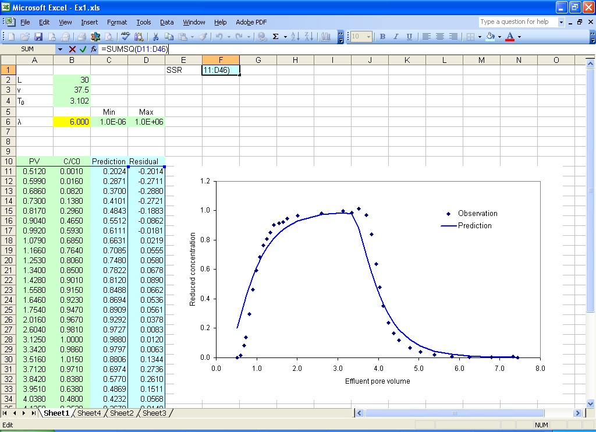
Fig. 2.3 Set up the objective function
Type in the formula =B11-C11 in D11(Fig. 2.3), and double click on the right bottom corner of cell D11 to extend the formula; type in the formula =SUMSQ(D11:D46) in cell F1 for objective function.
Select menu CXTFIT->Solve... to open CXTFIT/Excel Solve dialog (Fig. 2.4)
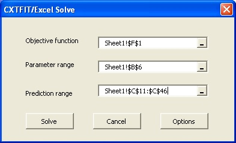
Fig. 2.4 CXTFIT/Excel Solve dialog
Select objective function cell, parameter range and prediction range as shown in Fig. 2.4, click the Solve button. When the optimization is finished, the Solver Results dialog (Fig. 2.5) pops up. Click the OK button with Keep Solver Solution. CXTFIT/Excel outputs the parameter estimate in B6, the standard deviation in E6, and the correlation in E7 (Fig. 2.6).
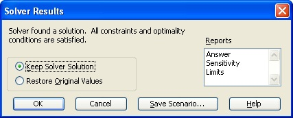
Fig. 2.5 Solver results dialog
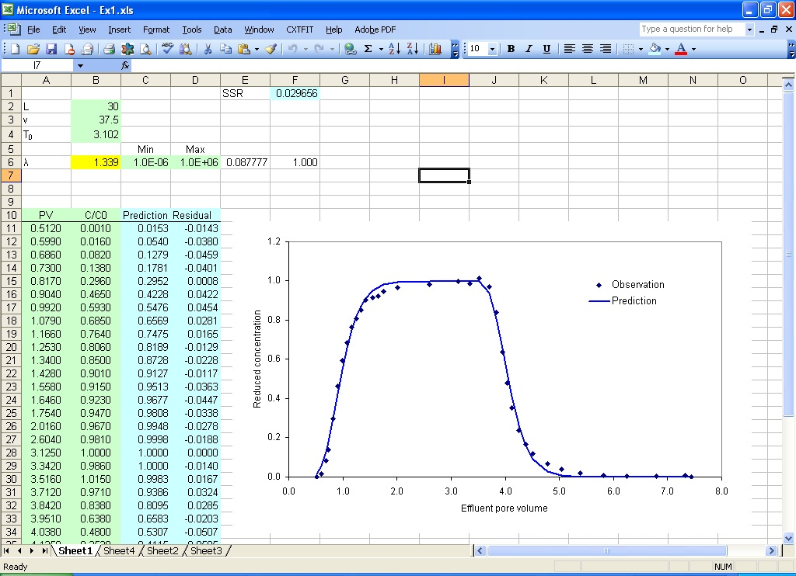
Fig. 2.6 Parameter estimate results
Type in the formula =1-F1/(VAR(B11:B46)*(COUNT(B11:B46)-1)) to calculate R square in cell F2 (Fig. 2.7)
Type in the formula =TINV(1-0.95, COUNT(B11:B46)-COUNT(B6)) to calculate t value in cell F3
Type in the formula =B6-F3*E6 to calculate the low confidence limit in cell G6
The upper confidence limit is calculated similarly.
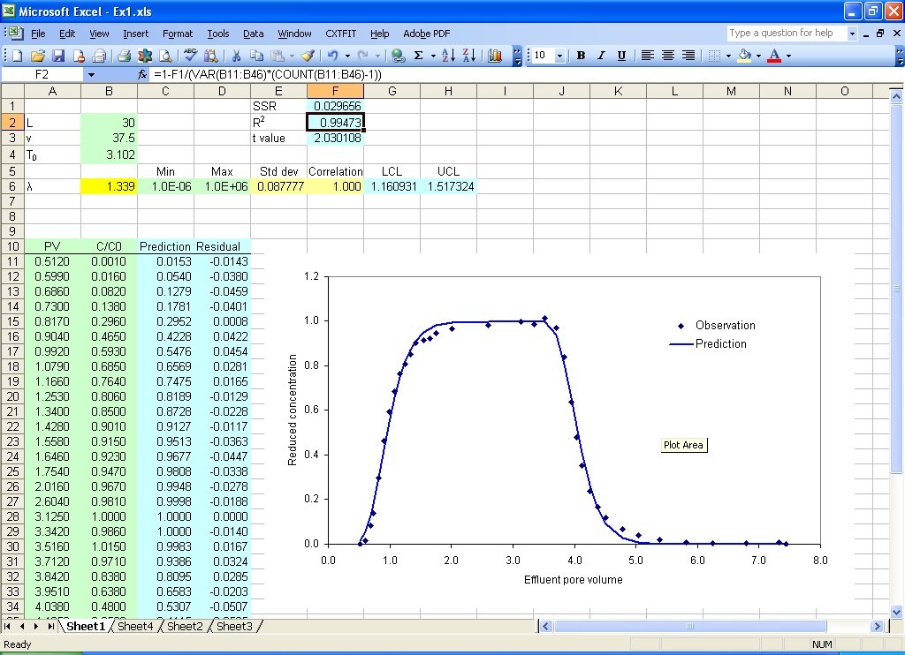
Fig. 2.7 More statistics
So far, the simple parameter estimation problem is solved. For interested users, we discuss an alternative operation procedure and other options for Step 5.
An alternative way to open CXTFIT/Excel dialog is to select menu Tools->Macro->Macros... or press Alt+F8 to open the Macro dialog (Fig. 2.8). Select SolveDialog and click Run to open it.
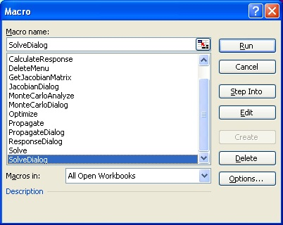
Fig. 2.8 Excel Macro dialog and CXTFIT/Excel Macros: Macro SolveDialog, JacobianDialog, PropagateDialog, ResponseDialog and MonteCarloDialog opens the interfaces to specify input and output and execute the Macro Solve, GetJacobianMatrix, Propagate, CalculateResponse and MonteCarloAnalyze to perform related functions; Macro AddMenu and DeleteMenu adds/removes CXTFIT menu; Macro Optimize and Analyze can be used for optimization and uncertainty analysis.
Jacobian matrix is calculated when the Macro Solve is invoked. Output of the sensitivity (Jacobian) of predictions to parameters can be set by clicking on the Options button in the Solve dialog (Fig. 2.4 in Step 5) to open the Solve Option dialog (Fig. 2.9). Check the last option and make the offset 2, click the OK button, then click on the button Solve, then the Jacobian matrix will be output in E11:E46, which has an offset of 2 from the prediction range (C11:C46). The scaled sensitivity and composite scaled sensitivity can be calculated. More details for sensitivity analysis are given in Section 4. More options in the Solve Option dialog are described in Section 8.
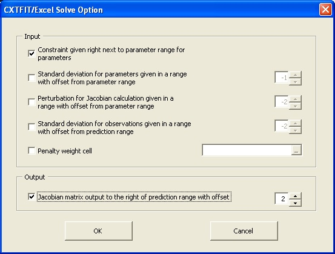
Fig. 2.9 Solve Option dialog
In Step 5, Excel local (sheet level) names ObjFuncCell = Sheet1!$F$1, ParameterRange = Sheet1!$B$6, and PredictionRange = Sheet1!$C$11:$C$46 are implicity defined to specify input for Macro Solve. These names will show up when Step 5 is repeated to open Solve dialog (Fig. 2.10). User can re-select these cell/ranges if necessary.
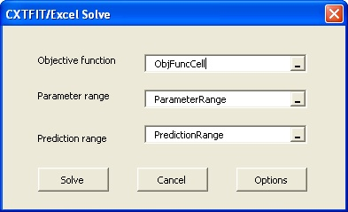
Fig. 2.10 Re-open Solve dialog in a sheet where local names are defined.
These names can be defined or changed by selecting menu Insert->Name->Define... to open Define Name dialog (Fig. 2.11). Type in Sheet1!PredictionRange, and select the prediction range, click Add to add the local name PredictionRange. Names ObjFuncCell and ParameterRange can be added similarly. With the names defined, Macro Solve can be executed to solve the problem similar to Step 5 without using the Solve dialog (Fig. 2.4).
Execution of Macro Solve can be accelerated by adding a button in the sheet. Select menu View->Toolbars->Forms, select Button. In the Forms toolbar (Fig. 2.12), click in the sheet to create a button, assign the button to Solve in the Assign Macro dialog (Fig. 2.13), and click OK to close the dialog.
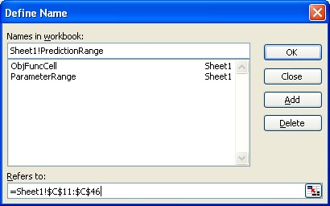
Fig. 2.11 Define Excel range names. The sheet name "Sheet1!" is added before PredictionRange to make the name local to the sheet.
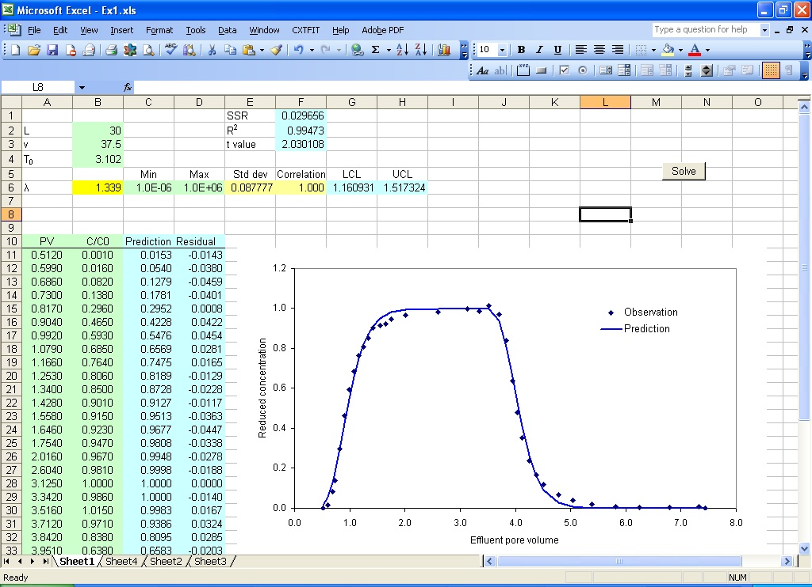
Fig. 2.12 Add and assign a button to Macro Solve in the sheet
The text on the button can be changed to "Solve". Now, click the Solve button invoke the Solve Macro, which adjusts the parameters in the parameter range to minimize the objective function, analyze and output parameter uncertainty with one operation. This can be a convenient alternative to Step 5 when the names are already defined.
Input of formula using function CDE and MIM can be complex and prone to error. For this example, we can define cell B4 by name T0 similar to Fig. 2.11, input formula =B6/B2 in cell B5 and define cell B5 by name IP, then the formula in C11 is =CDE(1, All, T0, 1.0, IP).
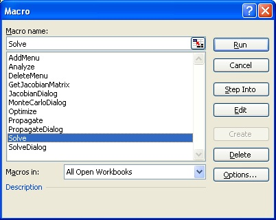
Fig. 2.13 Assign Macro to a button.